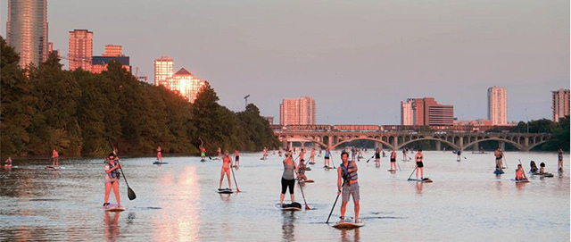

Exploring Austin
Active
Lady Bird Lake Paddle Boarding

SUP ATX is credited with introducing and popularizing the sport of Stand Up Paddle Surfing (SUP) in lakes, rivers and surfing areas throughout the United States and around the world beginning in 2008.